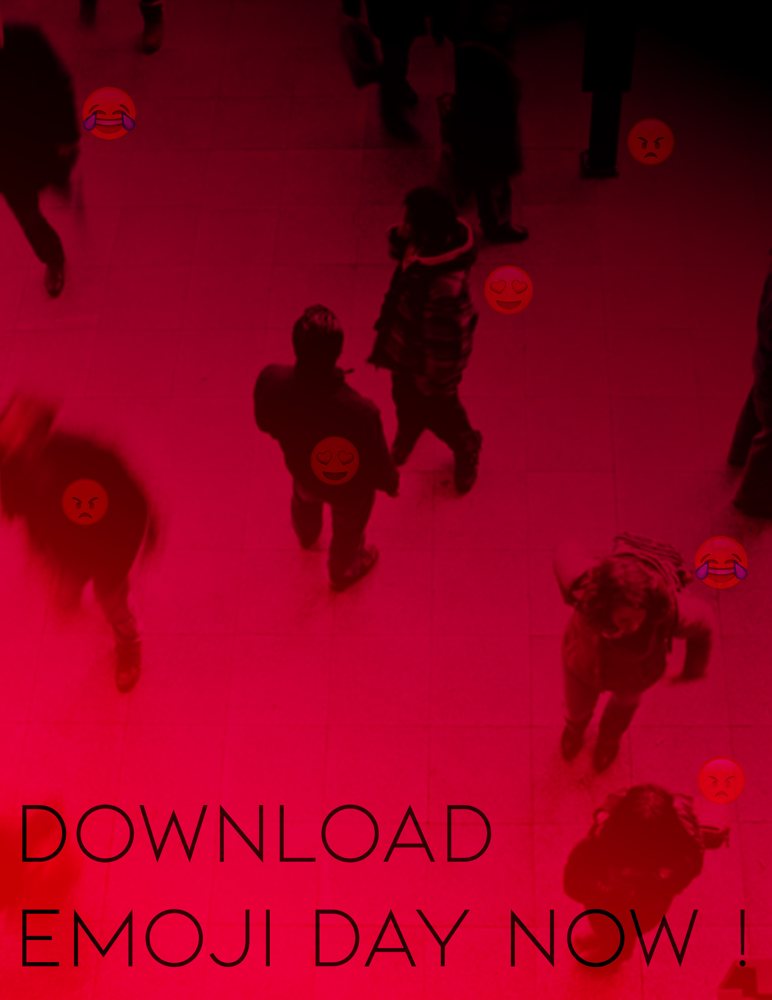

2D STUDY
My 2D study focuses on the topic of Augmented Reality It focuses on the future use of this technology in our everyday lives and how our dystopian reality will look like. I explore the ideas where in the future everyone will use AR glasses to see live streams and updates of information. This was inspired by the hyper reality video by Matsuda: [https://www.youtube.com/watch?v=YJg02ivYzSs](https://www.youtube.com/watch?v=YJg02ivYzSs) This questions and shows how AR in the future will look.